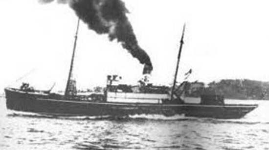

Bandırma Vapuru
Bandırma Vapuru , 1878 yılında İngiltere’de yük ve yolcu taşıma gemisi olarak 279
grostonluk kapasite ile inşa edildi. Geminin ilk sahipleri Dussey and Robinson adlı
şirkettir. Bu şirket gemiye Torocoderto adını vermiş ve gemiyi 5 yıl çalıştırmıştır.
Bandırma Vapuru, 1883 yılında Yunanistan'da bir şirkete satılmış ve Kymi adını alarak
çalıştırılmaya başlanmıştır. Daha sonra Yunanistan’da başka bir firmaya satılmış, 12 Aralık
1891 tarihinde bir kaza sonucu batmış ve aynı yıl tekrar yüzdürülmüştü.
Gemi, İstanbul'da bir firmaya satılmış ve kaydı İstanbul Limanı’na
alınmıştır. Gemiye Türk bayrağı çekilerek adı Panderma olarak değiştirilmiştir. 29 Ekim 1910
yılında Osmanlı Denizcilik İdaresi’nin kararı ile Panderma’nın adı Bandırma şeklinde
değiştirilerek posta vapuru olarak kullanılmaya başlanmıştır.
Mustafa Kemal ve arkadaşları toplantılar düzenleyerek yurdun kurtuluşu için çareler
aramaktaydılar. Bu sırada işgal kuvvetleri Samsun dolaylarında asayişin bozulduğunu, orada
yaşayan Türklerin Rumlara saldırdığını iddia etmekteydiler. Ve derhal müdahale edilmez ise
işgal kuvvetlerinin buraya müdahale edeceğini söylemekteydiler.
Mustafa Kemal Paşa Samsun’da asayişi sağlamak amacıyla görevlendirildi ve Samsun'a gitmek
için hazırlıklara başlandı. Bandırma Vapuru, Mustafa Kemal ve arkadaşlarını Samsun'a
götürmek için hazırlandı
Bandırma Vapuru zorlu deniz şartlarına dayanabilecek bir gemi
değildi. Bu sebeple bazı önlemler alındı. Bununla birlikte İngiliz işgal kuvvetlerinin
Bandırma Vapuru’nu geri göndermek istediklerini öğrenen Mustafa Kemal ve arkadaşları rotayı
değiştirerek ve gizlenerek Samsun'a ulaşmayı planladılar. Bu planları sonuç verdi ve gemi
kaptanının da özverisi ve başarısı ile Bandırma Vapuru 19 Mayıs 1919 Pazartesi günü Samsun
Limanı’na ulaştı. Mustafa Kemal Paşa, Samsun'a ayak bastı ve daha sonrasında burada halka
seslenerek Milli Mücadele’yi tam manası ile başlattı.
Yaşanan zorlu günlerin simgesi
haline gelen Bandırma Vapuru o günlerin anısını yaşatmak amacıyla aslına uygun bir şekilde
müze haline getirildi. Şu anda Bandırma Müzesi olarak Samsun'un Canik ilçesinde
ziyaretçilerini beklemektedir.